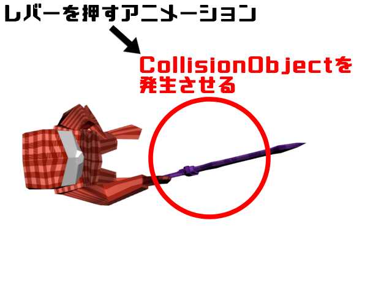
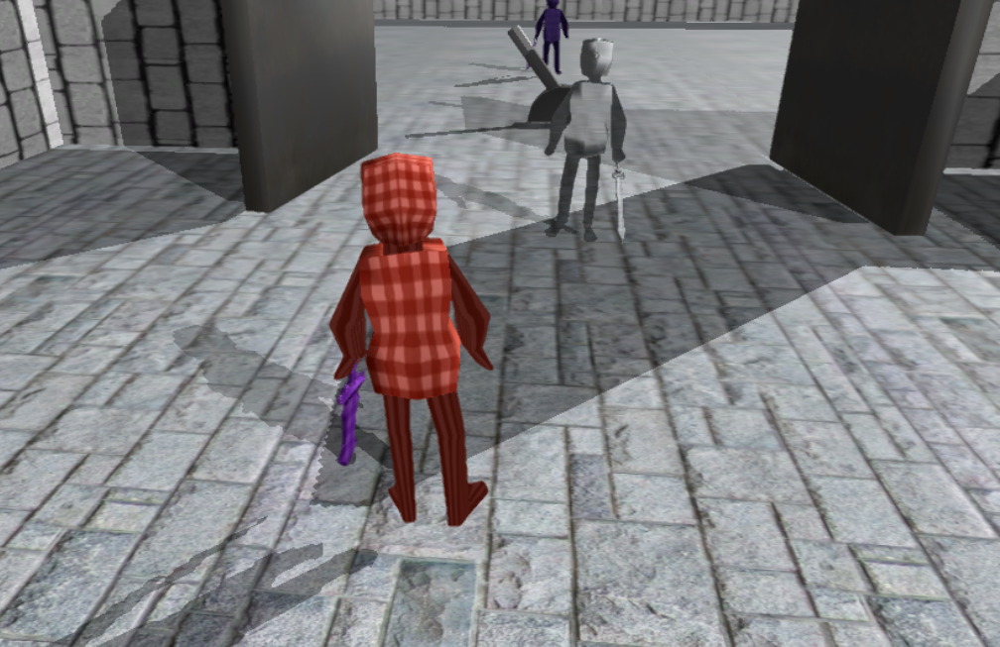

3.1 ステート(状態)
早速、プログラミングをしていきたい所ですが、その前に「ステート(状態)」について説明します。
このゲームのオブジェクトの挙動は、「ステート(状態)」によって管理されています。
例えば、「Player」クラスであれば以下のような「ステート」が存在します。
今回のゲームでは、この「ステート(状態)」を変化させることによりオブジェクトの挙動を制御していきます。
このことをしっかり覚えておいてください。
3.2 CollisionObject
k2Engineは日々アップデートされています。
この「CollisionObject」は、最近追加された機能であり、ゲーム制作をしている学生に配布しているエンジンには無い機能になります。
「CollisionObject」は、一言でいうと「PhysicsGhostObject」を使いやすくしたクラスになります。
「PhysicsGhostObject」については、k2EngineのSampleを参照してください。
一言でいうと、通り抜けることができる「Collision(当たり判定)」です。
今回、どういう風に「レバー」を実装するかということですが、まず「プレイヤー」がレバーを押すアニメーションを再生した時に、 プレイヤーの前に「CollisionObject」を発生させます。
その「CollisionObject」が「レバーのCollisionObject」と衝突していたら、レバーのアニメーションを再生させ、ドアの開閉を行います。

尚、「CollisionObject」は基本自動で削除されるので、基本的に「DeleteGO」をする必要はありません。
3.3 プレイヤー側のCollisionObjectの発生
それでは、「プレイヤー」が「レバーを押す」アニメーションをした時に、「CollisionObject」を発生させるコードを追加しましょう。 Visual Studioを開いてください。 まず、「CollisionObject」を使用するには、ファイルをインクルードする必要があります。 Player.cppを開いて、下記のコードを追加してください。Player.cpp
#include "stdafx.h"
#include "Player.h"
#include "Game.h"
#include "FireBall.h"
#include "sound/SoundEngine.h"
#include "sound/SoundSource.h"
//CollisionObjectを使用するために、ファイルをインクルードする。
#include "collision/CollisionObject.h"
Player.cpp
void Player::MakePushLeverCollision()
{
//コリジョンオブジェクトを作成する。
CollisionObject* collisionObject = NewGO<CollisionObject>(0);
Vector3 collisionPosition = m_position;
//座標をプレイヤーの少し前に設定する。
collisionPosition += m_forward * 50.0f;
//球状のコリジョンを作成する。
collisionObject->CreateSphere(collisionPosition, //座標。
Quaternion::Identity, //回転。
70.0f); //球の大きさ(半径)。
//名前を付ける。
collisionObject->SetName("player_lever");
}

できたら、Visual Studioの「ソリューション構成」を「Deubg」に設定して、F5キーで実行してみてください。
3.4 レバーのCollisionObject
Lever.h
#pragma once
//クラス宣言。
class CollisionObject;
///<summary>
///レバー。
///<summary>
class Lever : public IGameObject
{
public:
///<summary>
///レバーステート。
///<summary>
enum EnLeverState {
.
.
.
int m_leverNumber = 0; //レバーの番号。
CollisionObject* m_collisionObject; //コリジョンオブジェクト。
};
Lever.cpp
#include "stdafx"
#include "Lever.h"
#include "Door.h"
#include "sound/SoundEngine.h"
#include "sound/SoundSource.h"
//ファイルをインクルードする。
#include "collision/CollisionObject.h"
Lever::Lever()
{
}
Lever::~Lever()
{
//コリジョンオブジェクトを削除する。
DeleteGO(m_collisionObject);
}
bool Lever::Start()
{
//アニメーションを読み込む。
m_animationClips[enAnimationClip_Idle].Load("Assets/animData/lever/idle.tka");
m_animationClips[enAnimationClip_Idle].SetLoopFlag(false);
.
.
.
//モデルを読み込む。
m_modelRender.Init("Assets/modelData/lever/lever.tkm");
m_modelRender.SetPosition(m_position);
m_modelRender.SetScale(m_scale);
m_modelRender.SetRotation(m_rotation);
//コリジョンオブジェクトを作成する。
m_collisionObject = NewGO<CollisionObject>(0);
//ボックス状のコリジョンを作成。
m_collisionObject->CreateBox(m_position, //座標。
m_rotation, //回転。
Vector3(70.0f,70.0f,70.0f)); //大きさ。
//名前を設定する。
m_collisionObject->SetName("lever");
//自動で削除を無効にする(DeleteGOで削除する必要がある)。
m_collisionObject->SetIsEnableAutoDelete(false);
//音を読み込む。
g_soundEngine->ResistWaveFileBank(6, "Assets/sound/lever.wav");
return true;
}
では、最後に「プレイヤーのコリジョン」と「レバーのコリジョン」が衝突した時のコードを追加していきましょう。
Lever.cppの「ProcessTransitionPushState関数」に以下のコードを追加してください。60行目辺りにあります。
Lever.cpp
void Lever::ProcessTransitionPushState()
{
//プレイヤーが作成した、レバー用のコリジョンの配列を取得。
const auto& collisions = g_collisionObjectManager->FindCollisionObjects("player_lever");
//for文で配列を回す。
for(auto collision : collisions)
{
//レバー自身のコリジョンとプレイヤーのコリジョンが。
//衝突していたら。
if(collision->IsHit(m_collisionObject) == true)
{
//押すステートに遷移させる。
//押すステートに遷移させることにより、レバーの押すアニメーションが再生させる。
m_leverState = enLeverState_Push;
//効果音を流す。
SoundSource* se = NewGO<SoundSource>(0);
se->Init(6);
se->Play(false);
se->SetVolume(0.6f);
}
}
}
「CollisionObject」同士の判定を行うには「IsHit関数」を使用します。 「CollisionObject」が衝突したら、レバーのステートを「enLeverState_Pull」にし、「押すアニメーション」を再生させるようにしています。
Lever.cpp
void Lever::ProcessTransitionPushIdleState()
{
//押すアニメーションの再生が終了したら。
if(m_modelRender.IsPlayingAnimation() == true)
{
//ドアのオブジェクトの配列を取得する。
auto doors = FindGOs<Door>("door");
//for文で配列を回す。
for(auto door : doors)
{
//レバーの番号とドアの番号が一致していれば。
if(m_leverNumber == door->GetDoorNumber())
{
//ドアに開けることを通知する。
door->NotifyOpen();
//ステートを「レバーを押して終わった」に変更する。
m_leverState = enLeverState_Push_Idle;
break;
}
}
}
}
上記の実装は、「レバーの押すアニメーション」が終了したら、「ドアを開くアクション」をするというものです。
出来たら、F5キーで実行してみてください。レバーに近づいて、Aボタンを押したら、ドアが開くようになっているでしょうか。
ボス部屋まで到達できるでしょうか。

Lever.cpp
void Lever::ProcessTransitionPullState()
{
//プレイヤーが作成した、レバー用のコリジョンの配列を取得。
const auto& collisions = g_collisionObjectManager->FindCollisionObjects("player_lever");
//for文で配列を回す。
for(auto collision : collisions)
{
//レバー自身のコリジョンとプレイヤーの作成したコリジョンが衝突していたら。
if(collision->IsHit(m_collisionObject) == true)
{
//引くステートに遷移する。
m_leverState = enLeverState_Pull;
//効果音を流す。
SoundSource* se = NewGO<SoundSource>(0);
se->Init(6);
se->Play(false);
se->SetVolume(0.7f);
break;
}
}
}
Lever.cpp
void Lever::ProcessTransitionPullIdleState()
{
//引くアニメーションの再生が終了したら。
if(m_modelRender.IsPlayingAnimation() == true)
{
//ドアのオブジェクトの配列を取得する。
auto doors = FindGOs<Door>("door");
//for文で配列を回す。
for(auto door : doors)
{
//レバーの番号とドアの番号が一致したら。
if(m_leverNumber == door->GetDoorNumber())
{
//ドアに閉めることを通知する。
door->NotifyClose();
//レバーを「引き終わった」ステートに遷移させる。
m_leverState = enLeverState_Pull_Idle;
break;
}
}
}
}
出来たら、F5キーで実行してみてください。ドアを閉めれるようになっているでしょうか。